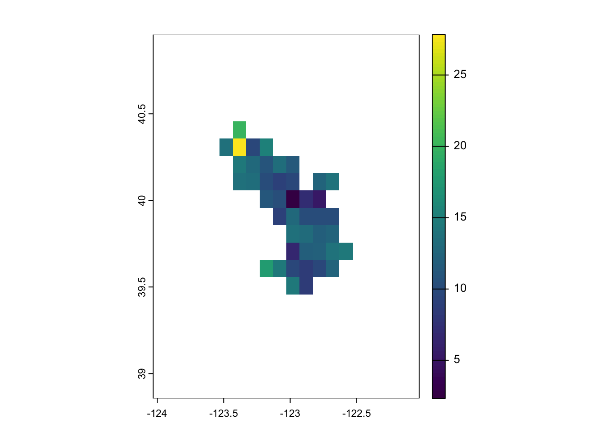
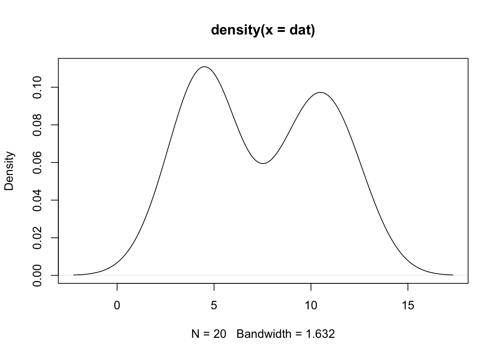

fire_box <- fire_bbox(fire = "august_complex", pad_box = TRUE, dir = '../shp')EFI_2025_Workshop
1 About this tutorial
1.1 Learning objectives
- How to download the necessary data from Planetary Computer
- How to create a simple forecast for the Post Fire Recovery theme
- How to submit/score a forecast to evaluate its accuracy
1.2 Target user groups for this tutorial
This tutorial is intended to be used by ecological forecasters at any stage of expertise and may be used as a learning tool as an introduction to forecasting properties of ecological processes spatially and temporally. Below, we provide code for introductory examples to walk through the entire process of creating and submitting a forecast to the Ecological Forecasting challenge. This includes:
- Accessing target datasets of MODIS LAI.
- Accessing climate forecast data to use as drivers in models predicting LAI recovery post fire.
- How to create models for raster data.
- How to submit a forecast to the forecast challenge
Upon completing this tutorial, participants should be able to create and submit forecasts to the MODIS LAI Post Fire Recovery theme of the EFI RCN NEON Ecological Forecasting challenge.
1.3 Things you will need to complete this tutorial
You will need a current version of R (v4.4 or newer) to complete this tutorial. We also recommend the RStudio IDE to work with R.
To complete the workshop via this markdown document the following packages will need to be installed:
tidyverselubridatetsibblestarsgdalcubesrstacterrascoringRulesforecastnimblespatstat.sparseassertthatminioclientpurrrneonstoreimputeTSremotes(to install neon4cast from gitHub)neon4cast(from github)
The following code chunk should be run to install packages.
install.packages('tidyverse') # collection of R packages for data manipulation, analysis, and visualisation
install.packages('lubridate') # working with dates and times
install.packages('stars')
install.packages('gdalcubes')
install.packages('rstac')
install.packages('terra')
install.packages('scoringRules') # package to score forecasts
install.packages('forecas')
install.packages('nimble')
install.packages('spatstat.sparse')
install.packages('assertthat')
install.packages('minioclient')
install.packages('purrr')
install.packages('remotes')
install.packages('neonstore')
install.packages('imputeTS')
remotes::install_github('eco4cast/neon4cast') # package from NEON4cast challenge organisers to assist with forecast building and submission
remotes::install_github("eco4cast/score4cast") # package to score forecastsThen load the packages.
version$version.string## [1] "R version 4.3.1 (2023-06-16 ucrt)"library(tidyverse)
library(lubridate)
library(tsibble)
library(stars)
library(gdalcubes)
library(rstac)
library(terra)
library(scoringRules)
library(forecast)
library(nimble)
library(spatstat.sparse)
library(assertthat)
library(minioclient)
library(purrr)
library(remotes)
library(neon4cast)
library(minioclient)
library(neonstore)
library(imputeTS)2 Introduction
2.1 The NEON Ecological Forecast Challenge
The Challenge has been organized by the Ecological Forecasting Initiative Research Coordination Network (EFI RCN). The EFI-NEON Forecasting Challenges are the first to set up a system to continually compile and score community generated forecasts for true out of sample data prior to data collection. These forecast challenges are extremely helpful for understanding how long into the future we can predict certain ecological properties and what types of models perform best. Questions about ecosystems and ecosystem services are inherently focused on the future because they involve understanding how natural systems will respond to changing environmental, social, and economic conditions over time. Commonly ecosystems are analyzed as single longitudinal time series. However, the intrinsic biodiversity within ecosystems leads to spatial gradients with varying ecosystem services. In this workshop, we present our prototype of a spatio-temporal forecasting challenge. This project represents a novel direction for the EFI-RCN and the field of ecological forecasting as a whole, by moving from single-site temporal forecast models to the consideration of entire eco-regions in a spatio-temporal setting.
The current NEON-EFI forecasting challenge has participants produce forecasts of future observations that are collected and published by NEON. The temporal forecasting challenge currently has a number of different themes that encompass aquatic systems, terrestrial systems, their respective eco-processes, and population ecology (e.g. ticks and beetles). In the long term, we envision partnering with the ecological forecasting community to incorporate spatio-temporal processes that are representative of the existing themes in the NEON-EFI forecasting challenge.
While we believe that it is crucial to incorporate spatial components into existing temporal forecasting models, there are challenges to address including the evaluation of spatially misaligned forecasts, increased model complexity and computation time, and the need to archive metadata for spatio-temporal ensemble forecasts. There are also natural research questions that scaffold from all of the previous research done in the context of the EFI-NEON forecasting challenge: are the same modeling frameworks that we deemed successful in this forecasting challenge well-suited to the addition of a spatial component? Are these models still successful but difficult to scale, computationally? Does the additional of granular spatial covariates help us to improve predictive performance of the model over it’s temporal counterpart? All of these questions are wide open but we need you, the Ecological Forecasting community, to help!
Our challenge is open to anyone who would like to participate, and in order for us to continue to grow this challenge we need feedback from this community. We will provide a tutorial on how to submit forecasts to the spatial forecasting challenge, and hope that this helps to facilitate usage and growth of the infrastructure that we have developed.
2.2 Goals for forecasts of post fire recovery
Ecologist are interested in tracking how landscapes and ecosystems recover from disturbances such as fire (changes in leaf area index (LAI)). The timing and pace of recovery can depend on many factors such as fire severity, ecosystem type, weather, species present in the location, and species present around the location. For this challenge we are forecasting MODIS LAI averaged across the month to account for cloud cover and other factors. The MODIS LAI product is 500 m spatial resolution and as such LAI values for each pixel are the combination of the combined foliage of all individuals and species in that 500 m pixel. Each fire that is being forecast has multiple pixels that need to be forecast, so there are multiple scores for each fire for each time step.
The speed and trajectory of post fire recovery varies for many reasons and it is important to understand the drivers of post fire recovery in LAI. By knowing how different ecosystem recovery post-fire over time we can forecast recovery in LAI for different ecosystems post fire. These forecasts could be used to help determine management of various ecosystems under future climates.
There are many open questions that this challenge could help us address: - What models perform the best for predicting LAI recovery post fire? and do they change by ecosystem type? - What are the key drivers for post fire recovery and do they change across ecosystem types or fire severity? - Are areas within each fire more predictable than others? If so why?
There are many more open questions and we will have a survey at the end to gather the ones that everyone is interested in and to help us guide the challenge.
2.3 Overview of the MODIS LAI Post Fire Recovery theme
What: Forecast Leaf Area Index (LAI) recovery post fire based on MODIS LAI. More information on the MODIS LAI data product (MOD15A2H.061: Terra Leaf Area Index/FPAR 8-Day Global 500m) we are forecasting can be found here or here. Note: We are not downloading the target datasets from the Planetary computer but are downloading a version that has had images with cloud cover greater than 10% removed and then the MODIS LAI values averaged for the each month instead of the 8 days of the MODIS LAI product.
LAI: Leaf Area Index in each cell within the fire bounding box.
Where: Before we can forecast fire recovery, we first need to define the fires of interest and their spatial extents. We have initially selected a handful of fires that span ecosystem types, occurred in close proximity to NEON sites to provide additional data sources for modeling efforts, occurred relatively recently, and were relatively large fires as the MODIS LAI data is being used currently at a relatively course resolution. We currently have shape files defined for 5 fires with 3 occurring in close proximity to NEON sites, the fire names in the spatial forecast system are:
- august_complex = California August Complex fire started in August 2020 and burned a total of 1,032,648 acres (417,898 ha) in NW California.
- east_troublesome = Colorado East Troublesome fire burned 193,812 acres in October and November 2020.
- sawmill = The Sawmill Fire that burned 46,991 acres (190 km^2) in the U.S. state of Arizona in April 2017 and was close in proximity Santa Rita Experimental Range (NEON SRER)
- creek = Soaproot Saddle (NEON SOAP)
- chimney_tops = The Chimney Tops 2 fire occured in November 2016 in and around Great Smoky Mountain National Park (NEON GRSM)
When: Target data are available as early as 2010 across our selected fires for monthly averages in LAI for each cell for each fire. Forecasts are accepted up to 1 month ahead on a monthly time step.
3 Forecasting MODIS LAI Recovery Post Fire
3.1 Define spatial and temporal parameters for our forecast
The target areas for the fires of interest are available in the /shp directory in Github repository. The fire_box function is available to grab the target area for each fire. The pad_box argument will pad a 0.5 degrees on each side on each side of the bounding box as defined by the fire mask shapefiles. Below is an example for the august_complex fire.
3.2 Read in the data
To facilitate spatio-temporal forecasting at the sites of interest for this challenge, time series data of 500m LAI measurements are stored in a MinIO bucket. MinIO is high-performance software-defined S3 compatible object storage. To read and write to the forecast cloud, we use functions with the prefix “spat4cast_”. We can use spat4cast_get_data() to read in a RasterCube object with the provided time series of LAI measurements, and spat4cast_get_target() to read in a target for our forecast.
raster_cube <- spat4cast_get_data(start_date = "2002-01-01",
end_date = "2025-05-01",
fire = "august_complex",
collection = "modis-15A2H-061",
asset_name = "Lai_500m",
srs = "EPSG:4326",
dx = 0.1,
dy = 0.1,
dt = "P30D",
aggregation = "mean",
resampling = "near",
variable = "lai_recovery")Warning in dir.create("files"): 'files' already existstarget_dir <- spat4cast_get_target(date = "2025-04-01", fire = "august_complex")Warning in dir.create("target"): 'target' already exists3.3 Visualise the target data
The target data are also stored in MinIO bucket. The target files are generated on a monthly basis via github actions using targets/spatial_targets.R workflow. The files can be downloaded with the spat4cast_get_targets function.
tg <- rast(target_dir)
plot(tg)
3.4 Create the training dataset
For some modelling approaches, a gdalcubes “RasterCube” format may be appropriate (e.g. ensemble climatology). For other modelling approaches though, it may be more straightforward to use the spatial time series data as a matrix or array. The gdalcube_to_matrix2 function will transform a RasterCUbe object into a matrix, where rows correspond to time slices, and columns correspond to gridcells. The threshold argument sets a limit at which high measurements are set to NA.
data_matrix <- gdalcube_to_matrix2(raster_cube, threshold = 12 )3.5 Example forecasts: some simple models
The main branch currently has two baseline models implemented. These models are intended to provide a benchmark for evaluating the performance of more complex models. The two baseline models that are currently implemented are:
- A spatial climatology ensemble model
- A grid ARIMA parametric model
We also have two baseline models in the development and debugging stage: - A spatio-temporal ICAR random walk - A spatio-temporal Gaussian Process.
For now, the first two models that we have implemented will provide reasonable competitors to the models developed by challenge participants, and in the context of this workshop will provide a nice demonstration of the difference between parametric and ensemble models and how they are scored.
3.5.1 Forecast MODIS LAI post fire: Local Climatology Model
The first baseline model is a local climatology model. Not to be confused with a climate model (which many participants may be familiar with), the purpose of a climatology model is to use historical data to build a forecast distribution.
The local part of the climatology model comes into play when we consider exactly what historical data is used to create the forecast distribution. As an example, suppose that we have ten years of daily temperature data for the entire state of Virginia. If our end goal is to create a forecast distribution for the temperature in Blacksburg, we may only want to consider the historical data from Montgomery County instead of the entire state. Indeed, the term local refers to the fact that we are only considering points that are, in some broad sense, close to our target in space or time.
In the context of generating baseline forecasts for post-fire LAI recovery, we have data from MODIS dating back to 2002 that comes in roughly every 8 days. Rather than using the entire dataset, we consider only LAI measurements that occur in the month of interest. This gives us a snapshot of historical data within a given month so that we can build an informed forecast distribution for how we would expect our process to behave. For example, if we are interested in forecasting the LAI at the Soaproot Saddle NEON site for May 2025, the local climatology model will include LAI measurements from May 2002, May 2003, etc all the way until May 2024.
A natural follow-up question: once we have identified the data, we want a baseline model. So what exactly is the statistical model that we are using here?
In fact these singleton data points are our statistical model, at least after a little bit of work. We put some little densities around them (sometimes called “kernel dressing” in the literature) and these little densities come together to turn these singleton points into a forecast distribution. Taking our example from above, this process yields the following:
plot(density(dat))
By choosing to “fit” a non-parametric model to our data we get some additional flexibility, since we don’t have to conform to some particular pre-specified probability distribution. For example, if we were to just take a mean and standard deviation of the above data and treat it as a univariate Normal distribution we would be missing out on the fact that our data is actually bimodal with two areas of high density.
In many situations, the climatology or local climatology models perform surprisingly well. To paraphrase Benjamin Franklin: “death, taxes, and losing to the climatology”. Post fire LAI recovery presents an interesting challenge for historical climatology data however: sites that not previously had a fire during the MODIS period from 2002 to present may not adequately capture the behavior of LAI during post fire-recovery.
Now, for the interesting part, a demonstration of how to fit the climatology model! The function spat_climatology() builds a climatology forecast using historical data for a given month, and stores an ensemble of geotiff files. In the event that there are missing historical data for a given month, missing values are imputed using a simple bootstrap re-sample of previous values within a pixel (using the internal na_bootstrap() function). For cyberinfrastructure pipeline purposes, spat_climatology returns the directory that ensemble forecasts were written to.
fire_box <- fire_bbox(fire = "august_complex", pad_box = TRUE, dir = '../shp')# Ingest data ------------------------------------------------------------
gdalcubes::gdalcubes_options(parallel=TRUE)
# use ingest_planetary_data function to extract raster cube for fire bounding box between Jan 1 2002 and July 1 2023.
raster_cube <- ingest_planetary_data(start_date = "2015-01-01",
end_date = "2025-03-01",
box = fire_box$bbox,
srs = "EPSG:4326",
dx = 0.1,
dy = 0.1,
dt = "P30D",
collection = "modis-15A2H-061",
asset_name = "Lai_500m")# Forecast ----------------------------------------------------------------
library(minioclient)
ensemble_forecast_dir <- spat_climatology(cuberast = raster_cube,
date = '2025-03-01',
dir = 'climatology')3.5.2 Forecast MODIS LAI post fire: gridded ARIMA model
The Grid ARIMA baseline model takes each grid cell in the fire polygon and fits a Seasonal Autoregressive Integrated Moving Average (SARIMA) model. This is a classical technique from time series analysis that combines differencing with autoregressive and moving average models.
If we are in the business of providing technical definitions: a time series \(x = \{x_1, ..., x_T \}\) follows a SARIMA(p, d, q)(P, D, Q)\(_s\) process if it can be written in the form: \[\begin{align*} \phi_P (B^s) \Phi_p (B) (1 - B^s)^D (1 - B)^d x_t = \theta_q (B^s) \Theta_q (B) w_t \end{align*}\] For our purposes, though, we just need to think of the SARIMA model as a flexible time series technique that lets us capture the temporal autocorrelation, seasonal effects, and correlated errors within a grid cell in a statistically cohesive manner.
There are a number of quantities that require estimation within each grid cell. The actual specification of each \(p_{i,j}, q_{i,j}, d_{i,j}\) as well as estimates of their associated parameters \(\vec{\theta}_{i,j}, \vec{\phi}_{i,j}, \sigma^2_{i,j}\) are computed using the auto.arima() function in the forecast library. We do this by taking the time series of LAI data within a particular grid cell, log transforming it, and letting auto.arima() pick the best model. We then generate forecasts for the next time point(s) using S3 method for the forecast function and extract the mean and standard deviation.
We fit our grid cell SARIMA baseline model using the spat_arima_grid() function. spat_arima_grid takes a rastercube object as input and fits a SARIMA model using auto.arima to each grid cell. Grid cells with less than 25 available data points are not considered. As with spat_climatology, the spat_arima_grid function returns the directory that forecasts were written to for pipeline purposes.
raster_cube <- spat4cast_get_data(start_date = "2002-01-01",
end_date = "2025-05-01",
fire = "august_complex",
collection = "modis-15A2H-061",
asset_name = "Lai_500m",
srs = "EPSG:4326",
dx = 0.1,
dy = 0.1,
dt = "P30D",
aggregation = "mean",
resampling = "near")Warning in dir.create("files"): 'files' already exists# dir.create("target")
#
# mc_alias_set("efi", "data.ecoforecast.org", access_key = "", secret_key = "")
#
# mc_cp("efi/spat4cast-targets/duration=P1M/variable=lai_recovery/site=august_complex/lai_recovery-target-2025-04-01.tif", "target")
parametric_forecast_dir1 <- spat_arima_grid(cuberast = raster_cube,
dir = 'gsarima',
target = target_dir)It is likely that grid cells that are close to each other exhibit spatial autocorrelation, and thus it is foolish to throw away that valuable information by treating each grid cell as independent. However, this model is meant to be a simple baseline comparator that demonstrates how parametric forecasts are scored. Baseline models that are currently in development seek to account for this spatial and temporal autocorrelation in a statistically rigorous manner.
Does this forecast seem reasonable?
3.6 How to submit a forecast to the NEON Forecast Challenge
install_mc()
mc_alias_set("efi", "data.ecoforecast.org", access_key = "", secret_key = "")
ensemble_forecast_dir |>
spat4cast_submit(model_id = 'johnsemble')
parametric_forecast_dir1 |>
spat4cast_submit(model_id = 'parametsmith')4 Evaluating your forecast
4.1 How your submission will be scored
Submissions are scored using two different proper scoring rules (Gneiting and Raftery, 2007): the Continuous Ranked Probability Score (CRPS; Matheson and Winkler, 1976) and the Logarithmic Score (LogS; Good, 1952). These scores are defined as follows: given a probability density function \(f(\cdot)\) and corresponding cumulative distribution function \(F(\cdot)\) for our forecast, and an observation \(y\), the IGN and CRPS may be written: \[\begin{align} \text{LogS}(y) &= -\log(f(y)); \\ \text{CRPS}(y) &= \int_{\mathbb{R}} (F(z) - \mathbf{I}_{z \geq y} )^2 dz \end{align}\] The LogS and CRPS are computed for each grid cell in the target. The individual values for each grid cell are saved, and are useful for visualizing particular areas where the forecast model is performing well or poorly. The final value reported for the challenge is simply the mean value of the respective scores across all grid cells.
There are two broad categories of “types” of forecasts that can be submitted for scoring, and our examples so far have been demonstrative of the differences.
- Ensemble forecasts
- Parametric forecasts
These forecasts are handled slightly differently in terms of how they are scored. Unsurprisingly, ensemble forecast submissions are scored using the scoring_spat_ensemble function and parametric forecasts are scored using the scoring_spat_parametric function. We will walk through how these two types of forecasts differ, how they are distinguished from one another during submission, and how they are scored.
Parametric forecasts are forecast distributions that can be described by a probability distribution with a finite set of parameters. For example, a Gaussian forecast distribution with a specified mean and standard deviation would be a parametric forecast. In the context of our spatio-temporal forecasting challenge, this can come across in a few different ways. For example, we may have parametric forecast distributions for each individual grid cell (such as our example auto SARIMA forecasts), or a multivariate distribution that jointly describes the grid such as a Multivariate Normal distribution. When deciding what method to use to score challenge submissions, we search the name of the submission raster for any of the following words:
- lognormal
- normal
- bernoulli
- beta
- uniform
- gamma
- logistic
- exponential
- poisson
If any of these words are present in the file naming convention for a particular forecast, the scoring pipeline will pull these files out and use the named probability distribution to analytically compute values for the CRPS and LogS.
For two parameter distributions, parametric forecasts submissions can be submitted as one or two GeoTiff files. If two .tifs are being submitted, the names of the file should be “{distribution}_{parameter}_forecast.tif”. The whole file name should be lowercase, but the layers within each .tif do not need to be named.
If a single .tif is being submitted, the file name should be “{distribution}_forecast.tif”, and the layer names must correspond with the appropriate parameter.
For parametric distributions which require only one parameter (poisson, exponential, bernoulli), either naming scheme may be used.
Ensemble forecasts, like the local climatology baseline model from Section 3.5.1, provide numerous different individual forecasts. These “different” forecasts could all be output from various models, the same model under different parameter settings, or the same model with the same parameters but with some instrinsic randomness or stochasticity. The way that these ensemble members are handled during scoring is fundamentally different than how parametric forecasts are handled. Submitting an ensemble forecast as a user is actually quite easy: create a collection of GeoTiff files, store them in a directory, and use the spat4cast_submit function like we did in Section 3.6. Since each individual ensemble member may be from a different forecast model, we cannot assume that the collection of ensembles comes from some underlying parametric distribution. Instead the ensemble output from each grid cell at each time is used to create probability density function, much like the example from Section 3.5.1! We then use this collection of probability density functions to assign CRPS and LogS scores using the scoringRules package under the hood.
4.2 How to score your own forecast
- Which model(s) did best?
- What might explain the differences in scores between the different models?
4.3 Improving your forecasts: Incorporating additional data
An obvious choice for improving on the baseline models presented here is to incorporate covariate information into our forecasts of LAI. Three of our focal fires occurred at NEON sites. This means that we have access to a wealth of covariate information, if we are able to access it and process it! In this section, we provide example code that uses the neonstore package to pull and aggregate NEON data for:
- Temperature (daily minimum and maximum temperature)
- Incoming shortwave radiation (daily)
- Relative humidity (daily)
In order to avoid any potential package and dependecy related issues with the installation of neonstore, we provide all of the example data from this section in a .csv file format on the bucket, so that participants can immediately jump into model building. This process can be roughly broken down into four steps:
- Identifying your site of interest
- Finding and accessing a data product for your covariate of interest
- Aggregating data to the desired time scale
- (Optional) Imputing missing data
## set site to desired NEON site
## here we will use SOAP, but the other focal
## sites can be used (GRSM or SRER)
site <- 'SOAP'The second step is to find a data product that contains your covariate of interest. While these seems like it may be a daunting task, thanks to NEON’s wonderful data portal (found here) it is not difficult at all. Searching “air temperature” in the data portal search bar gives us multiple options: we will go with Triple Aspirated Air Temperature (DP1.00003.001).
## air temp data product
air_temp_dp <- 'DP1.00003.001'Once we have identified our site and data product of interest, we can use the neon_download function from the neonstore package to pull the data. For further reading on neonstore, Claire K. Lunch has an excellent tutorial that can be found here.
## use neonstore package "neon_download" function to pull data product
## for triple aspirated air temperature
neon_download(product = air_temp_dp, site = site)With our data product of interest downloaded, we can now focus on aggregation to our desired timescale. Triple aspirated air temperature is available as one and thirty minute averages, and here we demonstrate how to aggregate to daily minimum and maximum temperature.
## read the 30 minute measurements into temp_table
temp_table <- neon_read("TAAT_30min-basic", site = site)
## create table of minimum and maximum temps
temp_info <- temp_table %>%
## use lubridate to extract date format
## extract only max and min data that does not
## have a quality flag
mutate(Date = as_date(endDateTime),
tempTripleMaximum = if_else(finalQF == 0,
tempTripleMaximum,
NA),
tempTripleMinimum = if_else(finalQF == 0,
tempTripleMinimum,
NA)) %>%
## group_by date to get daily mins/maxs
group_by(Date) %>%
## compute minimums and maximums
summarize(MinT_daily = min(tempTripleMinimum, na.rm = TRUE),
MaxT_daily = max(tempTripleMaximum, na.rm = TRUE)) %>%
## change infinite values to NAs for interpolation
mutate_if(is.numeric, ~
replace(., is.infinite(.), NA))The optional fourth step is imputation of missing data. In this example, we provide code for data imputation using a Kalman filter. We do note that data imputation can be done in many different ways, and thus in the example covariate data provided we include columns with both aggregated imputed data and aggregated raw data for any user who would like to employ their own imputation strategies.
library(imputeTS) ## for na_kalman
## interpolate missing temperature values using a kalman filter
temp_info$MinTInterp <- na_kalman(temp_info$MinT_daily)
temp_info$MaxTInterp <- na_kalman(temp_info$MaxT_daily)Though we won’t go through them in detail, additional code for pulling and aggregating shortwave radiation and relative humidity data is below:
## set data product for shortwave radiation (primary pyranometer)
swpp_dp <- 'DP1.00014.001'
## download shortwave radiation data from NEON
neon_download(product = swpp_dp, site = site)
## extract 30 minute shortwave radiation data
rad_table <- neon_read("SRDDP_30min-basic", site = site)
rad_info <- rad_table %>%
mutate(Date = as_date(endDateTime),
gloRadMean = if_else(gloRadFinalQF == 0,
gloRadMean,
NA)) %>%
group_by(Date) %>%
summarize(DirRad = mean(gloRadMean, na.rm = TRUE)) %>%
mutate_if(is.numeric, ~
replace(., is.nan(.), NA))
rad_info$DirRadInterp <- na_kalman(rad_info$DirRad)
## extract and aggregate radiation data to daily time
rh_dp <- 'DP1.00098.001'
neon_download(product = rh_dp, site = site)
rh_table <- neon_read("RH_30min", site = site)
rh_info <- rh_table %>%
mutate(Date = as_date(endDateTime),
rhMean = if_else(RHFinalQF == 0,
RHMean,
NA)) %>%
group_by(Date) %>%
summarize(RelHum = mean(RHMean, na.rm = TRUE)) %>%
mutate_if(is.numeric, ~
replace(., is.nan(.), NA))
rh_info$RelHumInterp <- na_kalman(rh_info$RelHum)Burn Severity Data
One valuable source of information about wildfire impact is burn severity metrics. The USGS maintains a Burn Severity Portal, which provides comprehensive documentation and access to relevant data products. The soil burn severity dataset discussed here was derived from Sentinel-2 satellite imagery and validated in the field by a U.S. Forest Service Burned Area Emergency Response (BAER) team. It is based on an initial Burned Area Reflectance Classification (BARC) dataset, which is created by analyzing pre- and post-fire Sentinel-2 scenes to generate a differenced Normalized Burn Ratio (dNBR) image. This dNBR image illustrates the variation in burn severity across a fire-affected area, capturing the cumulative effects on both vegetation and soil components of the ecosystem. The preliminary BARC dataset is then evaluated by a BAER team and adjusted as needed based on field observations. These data are produced by the USDA Forest Service’s Geospatial Technology and Applications Center (GTAC) to support BAER teams in post-fire assessment and response.

We have uploaded burn severity maps to the spat4cast_data bucket. These data can be gathered by using the spat4cast_get_data()function.
rastSbs <- spat4cast_get_data(fire = "august_complex",
variable = "burn_severity")Warning in dir.create("files"): 'files' already existsplot(rastSbs)5 What’s next?
- The forecasts we created here were relatively simple. What are ideas you have to improve the forecasts?
- How could you expand on this forecasting exercise? More fires? Different forecast horizons?
- How could you apply what you have learned here in your research or teaching?
Please take the time to provide feedback on the workshop and what you are interested in regarding the post fire recovery challenge as we move towards the official launch of the challenge. Spatial Workshop Survey
6 Acknowledgements
We would like to thank everyone who has joined the EFI Cyberinfrastructure calls during the last two years to provide feedback and discuss progress on this project. A special thank you to Carl Boettiger and Quinn Thomas for all of their assistance, from the onset of this project during the 2023 EFI Unconference to present.